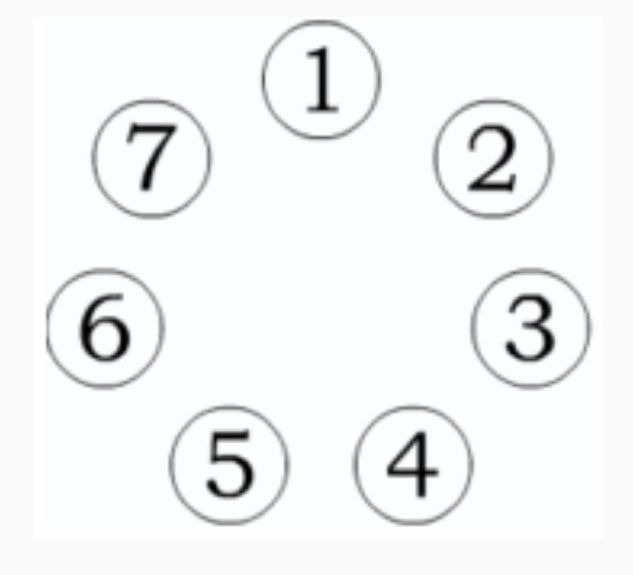

Seven coins are arranged in a circle. It is known that some four of them, lying in succession, are fake and that every counterfeit coin is lighter than a real one. Explain how to find two counterfeit coins from one weighing on scales without any weights. $($All counterfeit coins weigh the same.$)$
Note that three real coins also lie in a row. We number the coins in a circle, for example, moving clockwise, by numbers from 1 to 7 $($see the figure$)$.

We propose two methods of weighing.
The first method. On one scale we put the coins with numbers 1 and 2, and on the other - coins with numbers 4 and 5. With this weighing, all four counterfeit coins can not appear on the scales and at the same time there cannot be more than two real coins on the scales.
We consider two cases.
1$)$ One of the bowls is lighter. Then on it both coins are fake.
2$)$ The scales are balanced. Then on each scale there lies one counterfeit coin and one real one. Consequently, coins 6 and 7 are fake.
The second method. On one scale we put coin No. 1, and on the other - coin No. 4. Three cases are possible.
1$)$ The scales are balanced. Then both coins on the bowls are fake.
2$)$ Coin number 1 is lighter than coin number 4. Then coin number 1 is fake, and number 4 is real. Hence, coin 7 is also fake. 3$)$ Coin number 1 is heavier than coin number 4. Then coin number 1 is real. Consequently, coins 4 and 5 are fake.